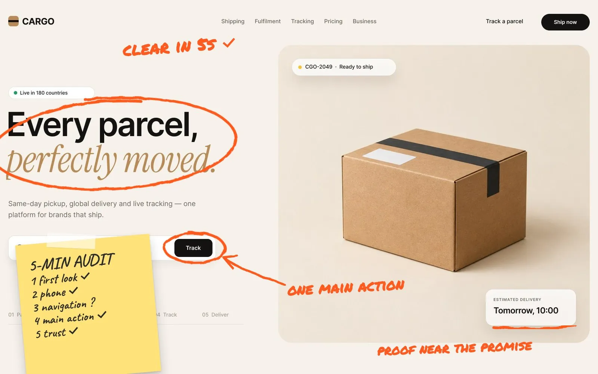
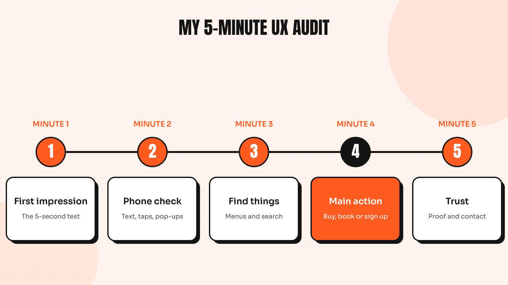

What I Check in a 5-Minute UX Audit
You don’t need a week to spot the biggest UX problems. Here is exactly what I look at in the first five minutes, minute by minute.

When someone sends me a link to their website or app, I can usually spot the biggest problems within five minutes. That isn’t magic. It’s a routine: the same quick checks, in the same order, every time.
A five-minute audit won’t replace a full review, but it finds the issues that cost the most, fast. Here is my routine, minute by minute, so you can run it on your own product today.

Minute 1: First impression
I open the homepage or landing page cold and ask the questions from the 5-second test: what is this, who is it for, why should I care and what should I do next? If I can’t answer all four from the first screen, that’s the first finding.
I also note how long the page takes to become usable. A slow first load is a UX problem, not just a technical one. If it feels slow, I run it through PageSpeed Insights later.
Minute 2: The phone check
Next I open the same page on my phone, because most visitors will. I look for text that’s too small, buttons that are hard to tap, pop-ups that cover the content and menus that are awkward to use with one thumb. My rules for thumb-friendly apps apply to websites too.
Minute 3: Can I find things?
I pick one obvious task, such as finding pricing, a product category or a contact page and try to get there. I watch for vague menu labels, missing search, dead-end pages and moments where I’m not sure what to click. If it takes me more than two or three clicks to find something important, visitors are getting lost too.
Minute 4: The main action
Every product has one action that matters most: buy, book, sign up or request a demo. I try to complete it or at least start it. Here I look for:
- A button that is easy to find and clearly labelled
- Forms that ask only for what is needed
- Clear errors when something goes wrong
- Costs, timelines or next steps shown before the final click
This is where most money is lost, so it gets the most attention. For stores, the 4 small checkout details that cost sales usually show up here.
Minute 5: Trust
Finally, I look for reasons to believe. Are there real reviews, client logos or results? Is it clear who is behind the business and how to contact them? Do the design and copy feel consistent and cared for? Small inconsistencies, broken images or outdated dates quietly reduce trust.
What to do with your findings
After five minutes I usually have three to eight notes. I sort them into three groups:
- Fix this week: copy, labels, button placement and missing information
- Plan next: form changes, navigation updates and mobile improvements
- Needs design work: structural problems in flows or page layouts
Then I fix the quick wins first and measure the difference before moving on.
When five minutes isn’t enough
The quick audit finds the loudest problems. A full audit goes deeper: analytics, session recordings, accessibility checks against WCAG and every key flow. If you want the long version, my 25-point UX audit checklist covers it.
Or, if you’d like me to run the five-minute version on your product, send me the link. I’m happy to share what I find.
Send me your screens and I’ll show you where users drop off and what to fix first.
Quick answers
How do I do a quick UX audit of my website?
Check five things in order: whether the first screen explains what you offer, how the site works on a phone, whether key pages are easy to find, whether the main action is simple to complete and whether there are enough trust signals.
What is the difference between a quick UX review and a full UX audit?
A quick review finds the most obvious problems in minutes. A full audit also covers analytics, session recordings, accessibility and every key flow and produces a prioritised list of fixes.
How often should I audit my website’s UX?
A quick check after every major release and a deeper audit once or twice a year works well for most businesses or before any redesign.